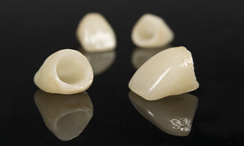
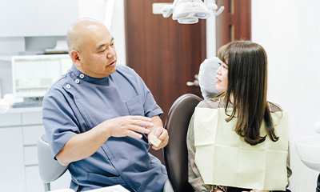
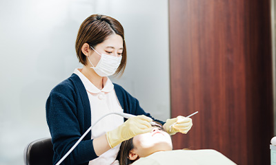
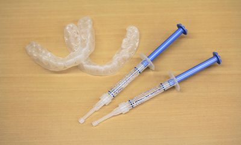
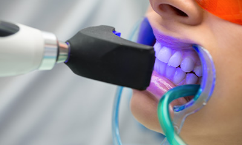

- 立川の歯医者「たけだなおや歯科クリニック」TOP
- セラミック治療・ホワイトニング
立川市の「たけだなおや歯科クリニック」では保険診療を中心にご提案しておりますが、「銀歯の見た目をどうにかしたい」「歯を白くしたい」といったお悩みには、自費診療のセラミック治療やホワイトニングをご提案することもできます。患者さんのご要望に合った治療プランを一緒に考えさせていただきますので、まずはお気軽にご相談ください。
「銀歯が気になる」「歯を白くしたい」などの悩みはありませんか？
～セラミック治療～
キレイと健康を両立するセラミック治療

保険診療で使用する銀歯は見た目が目立って気になるだけでなく、口腔内環境の悪化につながる可能性があります。保険診療の銀歯はお口の中の水分によって急速に劣化し、汚れもつきやすいため、虫歯・歯周病などのリスクが高まる原因に。また金属アレルギーを引き起こす可能性もあります。
こうした見た目・機能面の問題を改善し、先々まで長く使っていただけるのがセラミック素材を使用した人工歯です。天然歯に近い白さや透明感があり、金属アレルギーの心配もなし。セラミックは汚れがつきにくいため、虫歯や歯周病のリスクも抑えられます。
治療後のケアまでサポートします。

当院ではまず、患者さんのご要望を丁寧にお聞きするところからスタートし、お一人おひとりに合った治療プランの提案・アドバイスを行っています。ご提案するのは見た目（周囲の歯の色と合わせて自然な見た目に）と、機能面（咬み合わせなど）を両立させたセラミック治療。治療後には、せっかく入れたセラミックの人工歯が歯ぎしりなどで割れてしまわないように、マウスピースの装着をお願いする場合もあります。

最初から最後まで、すべての治療・対応に責任を持つのが当院のポリシーです。セラミック治療においても、ご相談・提案から治療後のケアまで、しっかりとサポートさせていただきます。治療を受けて被せ物がキレイになっても、その下の歯が虫歯などにかかってしまうと台無しです。歯の根がダメになると、せっかくの被せ物や人工歯を維持できなくなってしまいます。そのため、治療後のお口のケアや定期的な検診は非常に重要です。こうしたケア・メインテナンスも、当院がしっかりサポートします。
歯の黄ばみ・着色汚れ気になる方へ
～ホワイトニング～
お悩みやライフスタイルに
合わせてご提案します
専用の薬剤を使って天然歯を白くする「ホワイトニング」。加齢による黄ばみや飲食による着色汚れなどを、歯を削らずに改善することができます。
ホワイトニングの種類
ホームホワイトニング

ご自宅で行っていただくホワイトニングです。まずは当院にてお口に合わせてマウスピースを作製。あとは患者さんご自身が、薬剤を注入したマウスピースを装着して歯を白くしていきます。好きな場所・時間を選んで行えるのが大きな魅力です。また効果を実感できるまでには数週間かかりますが、その分、色の後戻りが起きにくい（長く白さを保てる）という特徴があります。
オフィスホワイトニング

クリニックで行うホワイトニングです。ホームホワイトニングよりも高濃度の薬剤を歯の表面に塗布し、特殊な光を当てて歯を白くしていきます。個人差はあるものの、1回の施術で効果を実感することができます。その反面、色の後戻りが起きやすいという特徴があります。
当院ではホームホワイトニングの対応がメインですが、患者さんのご要望や症例によって、「前歯のみ」といった部分的なオフィスホワイトニングにも対応いたします。